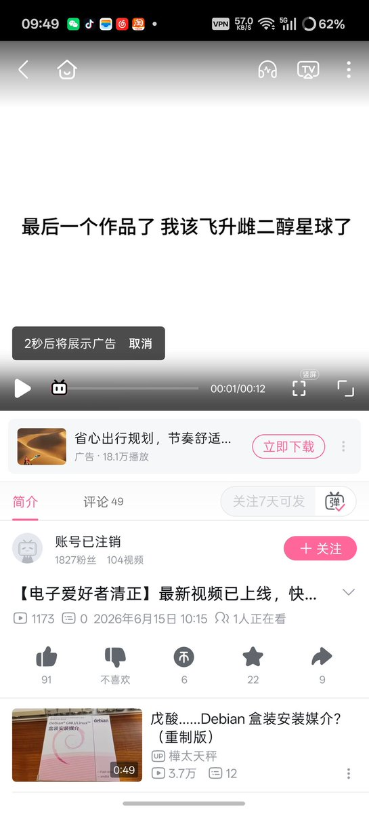
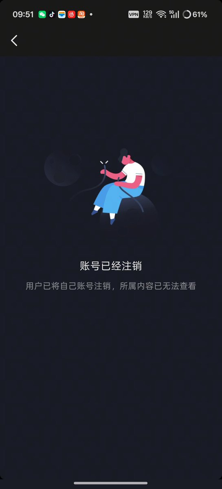

圣三一第一步枪 🍥 ❄️
@gdioiui
这个窝早认识了....甚至可以说是窝第一个认识的木桶饭...她一开始还没含糖...最著名的大概是抽血画画吧....
总之...她可能不太正常...至于死不死另当别论了....
也需要关心吧....


櫻川由奈🏳️⚧️Sakura🍥
@Xiaoyi_0324
6月15日 墙内跨圈知名UP主电子爱好者清正在抖音发布“这是我最后一个作品了” 随后在B站表示自己即将飞升“雌二醇星球”之后注销所有账号
网传已确认离世 不过笔者目前没有找到任何实际证据能证明 目前 本人仍在失踪状态 希望不要产生最坏的结果…… https://t.co/z8gUwgDXfz